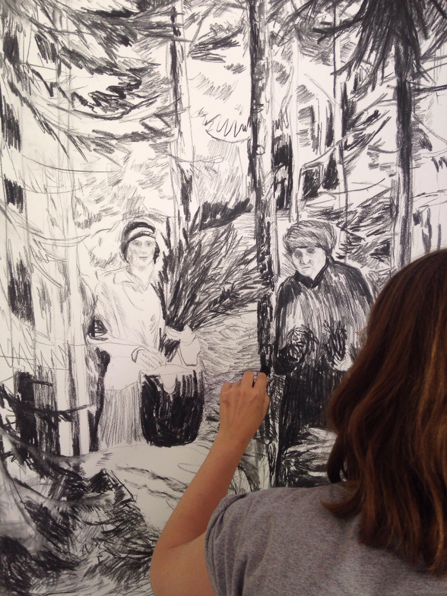

|  | Sanna HärkönenTechnically oriented educator of audiovisual communication I´m instructor of graphic design and visual communication interested in front-end development and technical problem solving.
|
| Adobe Illustrator | ⭐⭐⭐⭐ | Adobe Indesign | ⭐⭐⭐⭐ |
| Adobe Photoshop | ⭐⭐⭐ | Adobe After Effects | ⭐⭐ |
| HTML5 | ⭐⭐ | CSS3 | ⭐⭐ |